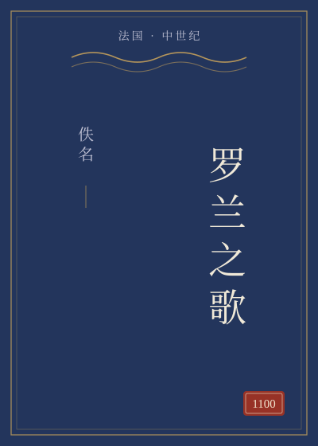
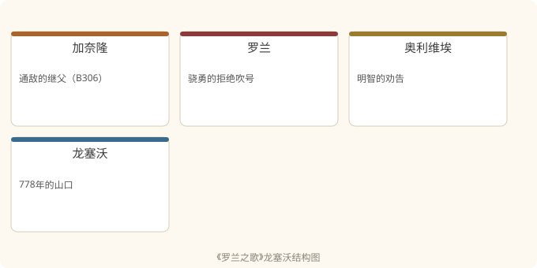

罗兰之歌
一、基本信息
| 作者 | 佚名（传统署名 Turold，图罗尔德——待核） |
|---|---|
| 成书/出版 | 约1100年（Britannica：probably the earliest (c. 1100) chanson de geste） La Chanson de Roland — Encyclopaedia Britannica（百科全书） |
| 国别/地区 | 法国 |
| 时代 | 古代 · 中世纪 |
| 体裁 | 武功歌（英雄史诗） |
| 语言 | 古法语 |

《罗兰之歌》龙塞沃结构图（主题·结构图）
二、创作背景
Britannica（B306）：'probably the earliest (c. 1100) chanson de geste'且'considered the masterpiece of the genre'（最早的武功歌、该文类的杰作——B306）。
题材（B306）：'The poem takes the historical Battle of Roncesvalles (Roncevaux) in 778 as its subject'——把778年龙塞沃小规模冲突史诗化。
三、内容脉络
加奈隆通敌：'plots with the Saracens to achieve his stepsons destruction'（B306）。
后军被围：'surrounded at the pass of Roncesvalles by an overwhelming Saracen force'（B306）。
罗兰拒绝吹号：'rejects Olivers advice to blow his horn'（B306）——直至太迟。
四、主要人物表
| 人物 | 身份 | 说明 |
|---|---|---|
| 罗兰 | 骑士 | 'recklessly courageous'（B306） |
| 奥利维埃 | 挚友 | 'more prudent friend'（B306） |
| 加奈隆 | 继子/叛徒 | （B306） |
五、主题与艺术特点
- 罗兰与奥利维埃的性格对撞（B306）。
- 封臣忠诚与家族复仇（通说待核）。
- 十字军语境前的圣战书写（通说待核）。
六、影响与评论
- Britannica：'considered the masterpiece of the genre'（武功歌的杰作——B306）。
La Chanson de Roland — Encyclopaedia Britannica（百科全书） - Britannica：'probably the earliest (c. 1100) chanson de geste'（B306）。
La Chanson de Roland — Encyclopaedia Britannica（百科全书）
七、阅读建议
难点
- 武功歌的十音节诗行。
- 778年史实与虚构的边界。
- 《罗兰之歌》（人民文学出版社杨宪益译本，通说待核）。
- 古法文原版（公有领域）。
中世纪史诗首选（先《罗兰之歌》后《尼伯龙根之歌》）。
八、待核实
- 牛津本（Bodleian Digby 23说）与 Turold 署名待核。
- 'Aoi'程式语核对。
- 号角 Olifant 名核对。